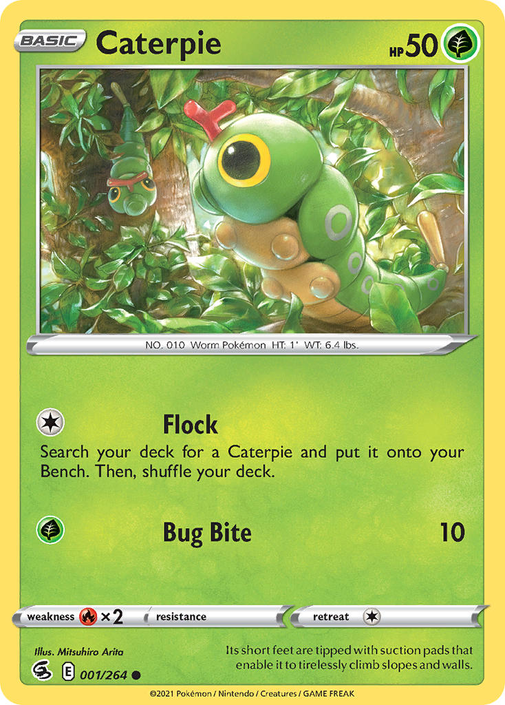

TradeBay
TradeBay

Pokémon: Caterpie
Caterpie is a Pokémon that resembles a green caterpillar with a yellow underside and teardrop-shaped tail. There are yellow ring-shaped markings down the sides of its segmented body, which resemble its eyes and are meant to scare off predators. Its most notable characteristic is the bright red antenna (osmeterium) on its head, which releases a stench to repel predators. Despite these features and its camouflage in green foliage, Caterpie is often preyed upon by Flying-type Pokémon. Its four tiny feet are tipped with suction cups, permitting this Pokémon to scale most surfaces with minimal effort.
Power: 50
Trait: Grass